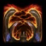

- Stats
- Abilities/Upgrades
- Strategy
- Lore
- Related
Armor: 1 |
3 with Chitinous Plating
 0/0 0 per second
0/0 0 per secondDamage: 15 (35 vs armored) |
(splash with 33% damage)
Attacks: 1
Cooldown: 0.861
Targets: Ground only
Attack Range: 1 | 2.5 splash in 180° arc
Speed on Creep: 3.83903
Acceleration: 1000
Collision Radius: 1
Requirements: Level 2 requires Lair, level 3 requires Hive
| Level |  Level 1 Level 1 |  Level 2 Level 2 |  Level 3 Level 3 |
| Minerals |  100 100 | 150 | 200 |
| Vespene Gas |  100 100 | 150 | 200 |
| Time |  160 160 | 190 | 220 |
| Damage Bonus | +2 (+2) | +4 (+4) | +6 (+6) |
| Total Damage | 17 (37) | 19 (39) | 21 (41) |
300Vespene Cost:
200Supply:
 6
6Produced From: Larva Build Time:
55Requirements: Ultralisk Cavern
Overlord Size: 8
Unit Type: Armored, Biological, Massive, Ground
Requirements: Level 2 requires Lair, level 3 requires Hive
| Level |  Level 1 Level 1 |  Level 2 Level 2 |  Level 3 Level 3 |
| Minerals | 150 | 225 | 300 |
| Vespene Gas | 150 | 225 | 300 |
| Time | 160 | 190 | 220 |
| Armor Bonus | +1 | +2 | +3 |
| Total Armor | 2 | 3 | 4 |
| Icon | Minerals | Vespene Gas | Research Time | Researched At |
| 150 | 150 | 110 | Ultralisk Cavern |
Information: Chitinous Plating gives all Ultralisks +2 armor. This allows a max carapace Ultralisk to have a total of 6 armor.
| Icon | Minerals | Vespene Gas | Research Time | Researched At |
|  | 0 | 0 | 0 | Already Researched |
Information: All Ultralisks start with this ability. The Frenzied ability gives the Ultralisk immunity to snare, stun, and mind control effects.
This is a passive ability.
| Icon | Minerals | Vespene Gas | Research Time | Researched At |
 | 100 | 100 | 100 | Lair |
Cast Time:
~2Information: Upon research of burrow, most Zerg units are given the ability. Burrow times vary from unit to unit.
You need a Lair to purchase burrow, but it can be researched at any Zerg production structure (Hatchery, Lair, or Hive).
Burrowed units are invisible unless a detector comes into range or a spell that reveals burrowed units hits them.
Burrow is useful for setting up traps or flanks against opponents without detection
A Zerg player can Burrow to try and save units that would otherwise not make an escape if the opponent does not have detection.
| Icon | Minerals | Vespene Gas | Research Time | Researched At |
 | 0 | 0 | 0 | Comes with Burrow |
Cast Time:
~2Information: Unburrow is the second part that comes with the research of Burrow. It allows you to bring Burrowed units back up. Unburrow times vary from unit to unit.
If you have any suggestions for more strategies, go ahead and post on the forums 'here'!
+1 Weapons vs Zerglings
When Zealots have a +1 weapon advantage versus Zerglings, they will kill Zerglings in two attacks instead of three. This makes Zealots very effecient against Zerglings until the zerg catches up in armor upgrades.
Because of this, there are a handful of timing attack that take advantage of the effecient +1 weapon zealots, forcing the zerg to make spines, roaches, or some other unit than zerglings unless the zerg wants to trade inefficiently.
+1 Weapons vs Zerglings
Sum text about how gosu this is
+1 Weapons vs Zerglings
Sum text about how gosu this is
- Overview
The ultralisk is a 20 meter long and 5 meter high living battering ram, evolved from the docile brontolith; a creature that the ultralisk now bears little resemblance to. Ultralisks serve as the backbone of the Swarm, possessing an exceptionally thick carapace. Ultralisks are the most powerful ground strain the Swarm possesses and their DNA is the "final viable code" utilized by larvae. An example of their might: a handful of ultralisks were "responsible for the death of an entire Confederate garrison" on Timul IV.
Ultralisks attack using large, bone-like scythes which protrude from their backs. Known as "kaiser blades", these scythes are nearly indestructible. Possessing monomolecular edges, these scythes are able to tear through most substances with ease.
Ultralisks have been submitted to countless genetic experiments. By 2500 at least some ultralisks sported four kaiser blades as opposed to the usual two. By the Brood War, prolonged exposure to vespene gas had resulted in an enhancement to the ultralisks' physical capabilities, among which was the evolution of a more hardened exoskeletal shell and the ability to carry out anabolic synthesis, alterations being made to the glands that produce endorphins and adrenal fluids. Ultralisks have been studied by terrans to a significant extent, Avernus Station and the Castanar space platform serving as examples.
Source Information
Text information from the Starcraft Wiki.
Photo 1 created by Saejin Oh. Copyright: UDON Entertainment.
Photo 2 created by Samwise Didier. Copyright: Blizzard Entertainment.
| Zerg |
| Units |
| Hatchery Tech | Drone | Overlord | Queen | Zergling | Baneling | Roach |
| Lair Tech | Overseer | Hydralisk | Mutalisk | Corruptor | Infestor |
| Hive Tech | Ultralisk | Broodlord |
| Spawned Units | Larva | Changeling | Infested Terran | Broodling |
| Structures |
| Hatchery Buildings | Extractor | Spawning Pool | Baneling Nest | Roach Warren | Evolution Chamber |
| Lair Buildings | Hydralisk Den | Spire | Infestation Pit | Nydus Network |
| Hive Buildings | Ultralisk Cavern | Greater Spire |
| Defensive Buildings | Spine Crawler | Spore Crawler | Creep Tumor | Nydus Worm |